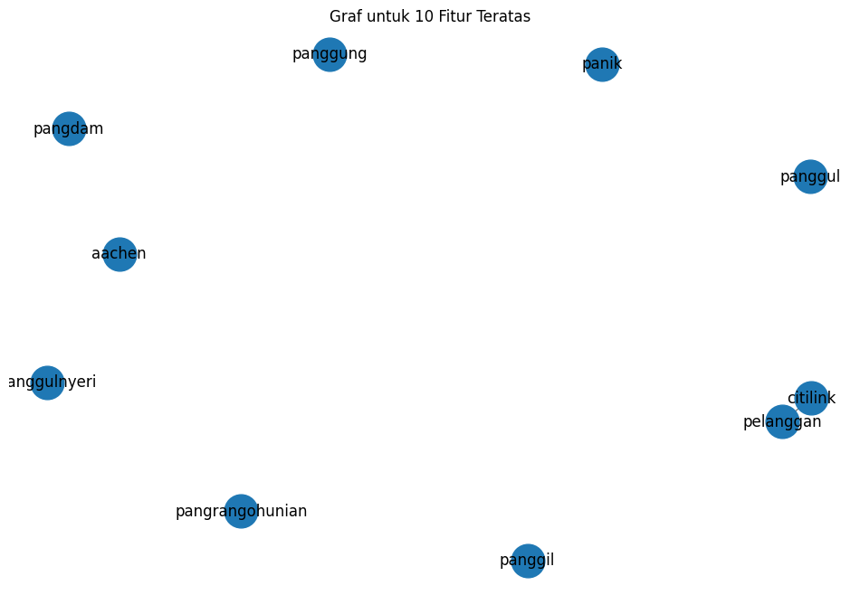
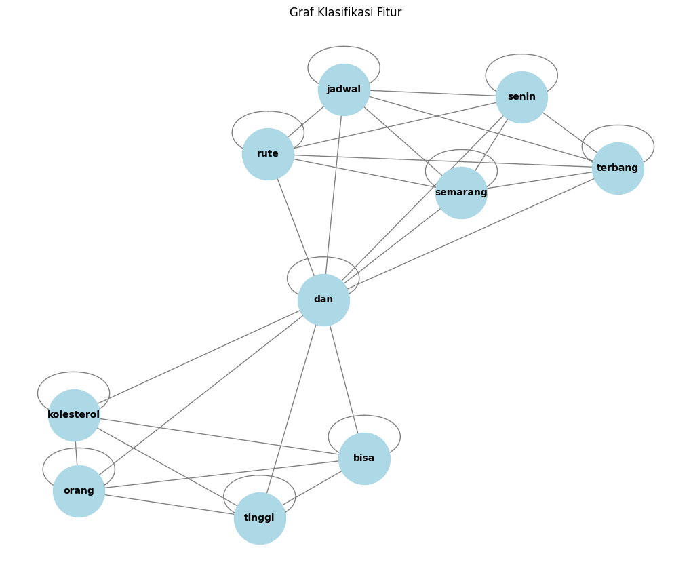

Tugas 4 : Centrality#
from google.colab import files
# Upload file dari komputer
uploaded_preprosessing = files.upload()
---------------------------------------------------------------------------
KeyboardInterrupt Traceback (most recent call last)
<ipython-input-1-a72b7e0c6bf1> in <cell line: 4>()
2
3 # Upload file dari komputer
----> 4 uploaded_preprosessing = files.upload()
/usr/local/lib/python3.10/dist-packages/google/colab/files.py in upload()
67 """
68
---> 69 uploaded_files = _upload_files(multiple=True)
70 # Mapping from original filename to filename as saved locally.
71 local_filenames = dict()
/usr/local/lib/python3.10/dist-packages/google/colab/files.py in _upload_files(multiple)
154
155 # First result is always an indication that the file picker has completed.
--> 156 result = _output.eval_js(
157 'google.colab._files._uploadFiles("{input_id}", "{output_id}")'.format(
158 input_id=input_id, output_id=output_id
/usr/local/lib/python3.10/dist-packages/google/colab/output/_js.py in eval_js(script, ignore_result, timeout_sec)
38 if ignore_result:
39 return
---> 40 return _message.read_reply_from_input(request_id, timeout_sec)
41
42
/usr/local/lib/python3.10/dist-packages/google/colab/_message.py in read_reply_from_input(message_id, timeout_sec)
94 reply = _read_next_input_message()
95 if reply == _NOT_READY or not isinstance(reply, dict):
---> 96 time.sleep(0.025)
97 continue
98 if (
KeyboardInterrupt:
import pandas as pd
import io
# Membaca file CSV yang diunggah dan menyimpannya ke dalam DataFrame dengan variabel df_trans
df = pd.read_csv(io.BytesIO(uploaded_preprosessing['data_preprosessing.csv']))
df.head(5) # Menampilkan 5 baris pertama dari DataFrame
| judul | tanggal | isi | kategori | cleaned_text | norm_text | token_text | swremove_text | |
|---|---|---|---|---|---|---|---|---|
| 0 | Badan Kurus Tak Berarti Bebas dari Kolesterol ... | Kamis, 05 Sep 2024 11:03 WIB | Jakarta - Tak sedikit yang beranggapan bahwa o... | Kesehatan | Jakarta Tak sedikit yang beranggapan bahwa ora... | jakarta tidak sedikit yang beranggapan bahwa o... | ['jakarta', 'tidak', 'sedikit', 'yang', 'beran... | ['jakarta', 'sedikit', 'beranggapan', 'orang',... |
| 1 | Budaya Kerja Toksik di Jepang Picu 54 Karyawan... | Kamis, 05 Sep 2024 10:38 WIB | Jakarta -\n \n Istilah 'bekerja ... | Kesehatan | Jakarta Istilah bekerja sampai mati nampaknya ... | jakarta istilah bekerja sampai mati nampaknya ... | ['jakarta', 'istilah', 'bekerja', 'sampai', 'm... | ['jakarta', 'istilah', 'bekerja', 'mati', 'nam... |
| 2 | Menyoal Serangan Jantung yang Dialami Faisal B... | Kamis, 05 Sep 2024 10:03 WIB | Jakarta - Faisal Basri meninggal dunia. Ekonom... | Kesehatan | Jakarta Faisal Basri meninggal dunia Ekonom Un... | jakarta faisal basri meninggal dunia ekonom un... | ['jakarta', 'faisal', 'basri', 'meninggal', 'd... | ['jakarta', 'faisal', 'basri', 'meninggal', 'd... |
| 3 | Nyeri Kronis yang Bikin Paus Fransiskus Tak Bi... | Kamis, 05 Sep 2024 09:37 WIB | Jakarta - Pemimpin tertinggi Gereja Katolik se... | Kesehatan | Jakarta Pemimpin tertinggi Gereja Katolik sedu... | jakarta pemimpin tertinggi gereja katolik sedu... | ['jakarta', 'pemimpin', 'tertinggi', 'gereja',... | ['jakarta', 'pemimpin', 'tertinggi', 'gereja',... |
| 4 | Perundungan PPDS Tak Cuma Terjadi di Undip, Be... | Kamis, 05 Sep 2024 08:35 WIB | Jakarta - Aksi bullying atau perundungan di ma... | Kesehatan | Jakarta Aksi bullying atau perundungan di masa... | jakarta aksi bullying atau perundungan di masa... | ['jakarta', 'aksi', 'bullying', 'atau', 'perun... | ['jakarta', 'aksi', 'bullying', 'perundungan',... |
import ast
df_doc = df.copy()
# Mengonversi string menjadi list jika perlu
df_doc['swremove_text'] = df_doc['swremove_text'].apply(lambda x: ast.literal_eval(x) if isinstance(x, str) else x)
# Membuat kolom baru 'clean_text' dengan menggabungkan list dalam 'swremove_text' menjadi kalimat biasa
df_doc['clean_text'] = df_doc['swremove_text'].apply(lambda x: ' '.join([str(word) for word in x]))
df_doc
| judul | tanggal | isi | kategori | cleaned_text | norm_text | token_text | swremove_text | clean_text | |
|---|---|---|---|---|---|---|---|---|---|
| 0 | Badan Kurus Tak Berarti Bebas dari Kolesterol ... | Kamis, 05 Sep 2024 11:03 WIB | Jakarta - Tak sedikit yang beranggapan bahwa o... | Kesehatan | Jakarta Tak sedikit yang beranggapan bahwa ora... | jakarta tidak sedikit yang beranggapan bahwa o... | ['jakarta', 'tidak', 'sedikit', 'yang', 'beran... | [jakarta, sedikit, beranggapan, orang, berbada... | jakarta sedikit beranggapan orang berbadan kur... |
| 1 | Budaya Kerja Toksik di Jepang Picu 54 Karyawan... | Kamis, 05 Sep 2024 10:38 WIB | Jakarta -\n \n Istilah 'bekerja ... | Kesehatan | Jakarta Istilah bekerja sampai mati nampaknya ... | jakarta istilah bekerja sampai mati nampaknya ... | ['jakarta', 'istilah', 'bekerja', 'sampai', 'm... | [jakarta, istilah, bekerja, mati, nampaknya, s... | jakarta istilah bekerja mati nampaknya ssudah ... |
| 2 | Menyoal Serangan Jantung yang Dialami Faisal B... | Kamis, 05 Sep 2024 10:03 WIB | Jakarta - Faisal Basri meninggal dunia. Ekonom... | Kesehatan | Jakarta Faisal Basri meninggal dunia Ekonom Un... | jakarta faisal basri meninggal dunia ekonom un... | ['jakarta', 'faisal', 'basri', 'meninggal', 'd... | [jakarta, faisal, basri, meninggal, dunia, eko... | jakarta faisal basri meninggal dunia ekonom un... |
| 3 | Nyeri Kronis yang Bikin Paus Fransiskus Tak Bi... | Kamis, 05 Sep 2024 09:37 WIB | Jakarta - Pemimpin tertinggi Gereja Katolik se... | Kesehatan | Jakarta Pemimpin tertinggi Gereja Katolik sedu... | jakarta pemimpin tertinggi gereja katolik sedu... | ['jakarta', 'pemimpin', 'tertinggi', 'gereja',... | [jakarta, pemimpin, tertinggi, gereja, katolik... | jakarta pemimpin tertinggi gereja katolik sedu... |
| 4 | Perundungan PPDS Tak Cuma Terjadi di Undip, Be... | Kamis, 05 Sep 2024 08:35 WIB | Jakarta - Aksi bullying atau perundungan di ma... | Kesehatan | Jakarta Aksi bullying atau perundungan di masa... | jakarta aksi bullying atau perundungan di masa... | ['jakarta', 'aksi', 'bullying', 'atau', 'perun... | [jakarta, aksi, bullying, perundungan, masa, p... | jakarta aksi bullying perundungan masa program... |
| ... | ... | ... | ... | ... | ... | ... | ... | ... | ... |
| 95 | Iwh, Pekerja Speedboat Thailand Pamer BAB ke L... | Rabu, 04 Sep 2024 05:01 WIB | Jakarta - Warga Thailand dibuat jijik dengan k... | Pariwisata | Jakarta Warga Thailand dibuat jijik dengan kel... | jakarta warga thailand dibuat jijik dengan kel... | ['jakarta', 'warga', 'thailand', 'dibuat', 'ji... | [jakarta, warga, thailand, dibuat, jijik, kela... | jakarta warga thailand dibuat jijik kelakuan s... |
| 96 | Ogah Bayar Layanan, 3 Turis Palestina Keroyok ... | Selasa, 03 Sep 2024 21:05 WIB | Taba - Seorang staf hotel di Mesir tewas usai ... | Pariwisata | Taba Seorang staf hotel di Mesir tewas usai be... | taba seorang staf hotel di mesir tewas usai be... | ['taba', 'seorang', 'staf', 'hotel', 'di', 'me... | [taba, seorang, staf, hotel, mesir, tewas, usa... | taba seorang staf hotel mesir tewas usai berke... |
| 97 | Licik, Keluarga Taruh Kecoa di Piring Agar Mak... | Selasa, 03 Sep 2024 20:37 WIB | Jakarta - Keluarga asal Meksiko dituduh melaku... | Pariwisata | Jakarta Keluarga asal Meksiko dituduh melakuka... | jakarta keluarga asal meksiko dituduh melakuka... | ['jakarta', 'keluarga', 'asal', 'meksiko', 'di... | [jakarta, keluarga, asal, meksiko, dituduh, me... | jakarta keluarga asal meksiko dituduh melakuka... |
| 98 | Terulang Lagi, Triatlon Paralimpiade Ditunda g... | Selasa, 03 Sep 2024 20:05 WIB | Paris - Saat Olimpiade Paris 2024 lalu, kompet... | Pariwisata | Paris Saat Olimpiade Paris lalu kompetisi tria... | paris saat olimpiade paris lalu kompetisi tria... | ['paris', 'saat', 'olimpiade', 'paris', 'lalu'... | [paris, olimpiade, paris, lalu, kompetisi, tri... | paris olimpiade paris lalu kompetisi triatlon ... |
| 99 | Wow, Super Air Jet Buka 8 Rute Baru dari Semar... | Selasa, 03 Sep 2024 19:37 WIB | Jakarta - Super Air Jet membuka delapan rute b... | Pariwisata | Jakarta Super Air Jet membuka delapan rute bar... | jakarta super air jet membuka delapan rute bar... | ['jakarta', 'super', 'air', 'jet', 'membuka', ... | [jakarta, super, air, jet, membuka, delapan, r... | jakarta super air jet membuka delapan rute bar... |
100 rows × 9 columns
# Cek jumlah missing values di setiap kolom
missing_values = df_doc.isnull().sum()
print("Jumlah missing values per kolom:")
print(missing_values)
Jumlah missing values per kolom:
judul 0
tanggal 0
isi 0
kategori 0
cleaned_text 0
norm_text 0
token_text 0
swremove_text 0
clean_text 0
dtype: int64
from sklearn.preprocessing import LabelEncoder
# Transformasi data kategorik
label_encoder = LabelEncoder()
df_doc.loc[:, 'kategori_encoded'] = label_encoder.fit_transform(df_doc['kategori'])
# Menampilkan nilai sebelum dan sesudah konversi
print("\nNilai sebelum dan sesudah konversi:")
print(dict(zip(label_encoder.classes_, label_encoder.transform(label_encoder.classes_))))
print("\nDataFrame setelah Label Encoding:")
print(df_doc)
Nilai sebelum dan sesudah konversi:
{'Kesehatan': 0, 'Pariwisata': 1}
DataFrame setelah Label Encoding:
judul \
0 Badan Kurus Tak Berarti Bebas dari Kolesterol ...
1 Budaya Kerja Toksik di Jepang Picu 54 Karyawan...
2 Menyoal Serangan Jantung yang Dialami Faisal B...
3 Nyeri Kronis yang Bikin Paus Fransiskus Tak Bi...
4 Perundungan PPDS Tak Cuma Terjadi di Undip, Be...
.. ...
95 Iwh, Pekerja Speedboat Thailand Pamer BAB ke L...
96 Ogah Bayar Layanan, 3 Turis Palestina Keroyok ...
97 Licik, Keluarga Taruh Kecoa di Piring Agar Mak...
98 Terulang Lagi, Triatlon Paralimpiade Ditunda g...
99 Wow, Super Air Jet Buka 8 Rute Baru dari Semar...
tanggal \
0 Kamis, 05 Sep 2024 11:03 WIB
1 Kamis, 05 Sep 2024 10:38 WIB
2 Kamis, 05 Sep 2024 10:03 WIB
3 Kamis, 05 Sep 2024 09:37 WIB
4 Kamis, 05 Sep 2024 08:35 WIB
.. ...
95 Rabu, 04 Sep 2024 05:01 WIB
96 Selasa, 03 Sep 2024 21:05 WIB
97 Selasa, 03 Sep 2024 20:37 WIB
98 Selasa, 03 Sep 2024 20:05 WIB
99 Selasa, 03 Sep 2024 19:37 WIB
isi kategori \
0 Jakarta - Tak sedikit yang beranggapan bahwa o... Kesehatan
1 Jakarta -\n \n Istilah 'bekerja ... Kesehatan
2 Jakarta - Faisal Basri meninggal dunia. Ekonom... Kesehatan
3 Jakarta - Pemimpin tertinggi Gereja Katolik se... Kesehatan
4 Jakarta - Aksi bullying atau perundungan di ma... Kesehatan
.. ... ...
95 Jakarta - Warga Thailand dibuat jijik dengan k... Pariwisata
96 Taba - Seorang staf hotel di Mesir tewas usai ... Pariwisata
97 Jakarta - Keluarga asal Meksiko dituduh melaku... Pariwisata
98 Paris - Saat Olimpiade Paris 2024 lalu, kompet... Pariwisata
99 Jakarta - Super Air Jet membuka delapan rute b... Pariwisata
cleaned_text \
0 Jakarta Tak sedikit yang beranggapan bahwa ora...
1 Jakarta Istilah bekerja sampai mati nampaknya ...
2 Jakarta Faisal Basri meninggal dunia Ekonom Un...
3 Jakarta Pemimpin tertinggi Gereja Katolik sedu...
4 Jakarta Aksi bullying atau perundungan di masa...
.. ...
95 Jakarta Warga Thailand dibuat jijik dengan kel...
96 Taba Seorang staf hotel di Mesir tewas usai be...
97 Jakarta Keluarga asal Meksiko dituduh melakuka...
98 Paris Saat Olimpiade Paris lalu kompetisi tria...
99 Jakarta Super Air Jet membuka delapan rute bar...
norm_text \
0 jakarta tidak sedikit yang beranggapan bahwa o...
1 jakarta istilah bekerja sampai mati nampaknya ...
2 jakarta faisal basri meninggal dunia ekonom un...
3 jakarta pemimpin tertinggi gereja katolik sedu...
4 jakarta aksi bullying atau perundungan di masa...
.. ...
95 jakarta warga thailand dibuat jijik dengan kel...
96 taba seorang staf hotel di mesir tewas usai be...
97 jakarta keluarga asal meksiko dituduh melakuka...
98 paris saat olimpiade paris lalu kompetisi tria...
99 jakarta super air jet membuka delapan rute bar...
token_text \
0 ['jakarta', 'tidak', 'sedikit', 'yang', 'beran...
1 ['jakarta', 'istilah', 'bekerja', 'sampai', 'm...
2 ['jakarta', 'faisal', 'basri', 'meninggal', 'd...
3 ['jakarta', 'pemimpin', 'tertinggi', 'gereja',...
4 ['jakarta', 'aksi', 'bullying', 'atau', 'perun...
.. ...
95 ['jakarta', 'warga', 'thailand', 'dibuat', 'ji...
96 ['taba', 'seorang', 'staf', 'hotel', 'di', 'me...
97 ['jakarta', 'keluarga', 'asal', 'meksiko', 'di...
98 ['paris', 'saat', 'olimpiade', 'paris', 'lalu'...
99 ['jakarta', 'super', 'air', 'jet', 'membuka', ...
swremove_text \
0 [jakarta, sedikit, beranggapan, orang, berbada...
1 [jakarta, istilah, bekerja, mati, nampaknya, s...
2 [jakarta, faisal, basri, meninggal, dunia, eko...
3 [jakarta, pemimpin, tertinggi, gereja, katolik...
4 [jakarta, aksi, bullying, perundungan, masa, p...
.. ...
95 [jakarta, warga, thailand, dibuat, jijik, kela...
96 [taba, seorang, staf, hotel, mesir, tewas, usa...
97 [jakarta, keluarga, asal, meksiko, dituduh, me...
98 [paris, olimpiade, paris, lalu, kompetisi, tri...
99 [jakarta, super, air, jet, membuka, delapan, r...
clean_text kategori_encoded
0 jakarta sedikit beranggapan orang berbadan kur... 0
1 jakarta istilah bekerja mati nampaknya ssudah ... 0
2 jakarta faisal basri meninggal dunia ekonom un... 0
3 jakarta pemimpin tertinggi gereja katolik sedu... 0
4 jakarta aksi bullying perundungan masa program... 0
.. ... ...
95 jakarta warga thailand dibuat jijik kelakuan s... 1
96 taba seorang staf hotel mesir tewas usai berke... 1
97 jakarta keluarga asal meksiko dituduh melakuka... 1
98 paris olimpiade paris lalu kompetisi triatlon ... 1
99 jakarta super air jet membuka delapan rute bar... 1
[100 rows x 10 columns]
# Menyimpan DataFrame ke file CSV
df_doc.to_csv('teks beneran bersih rill cuy.csv', index=False)
Split Data#
from sklearn.model_selection import train_test_split
# Split data
x = df_doc['clean_text']
y = df_doc['kategori_encoded']
print(x)
print(y)
x_train, x_test, y_train, y_test = train_test_split(x, y, test_size=0.2, random_state=12)
print("="*50)
print("Jumlah data latih:", len(x_train))
print("Jumlah data uji:", len(x_test))
0 jakarta sedikit beranggapan orang berbadan kur...
1 jakarta istilah bekerja mati nampaknya ssudah ...
2 jakarta faisal basri meninggal dunia ekonom un...
3 jakarta pemimpin tertinggi gereja katolik sedu...
4 jakarta aksi bullying perundungan masa program...
...
95 jakarta warga thailand dibuat jijik kelakuan s...
96 taba seorang staf hotel mesir tewas usai berke...
97 jakarta keluarga asal meksiko dituduh melakuka...
98 paris olimpiade paris lalu kompetisi triatlon ...
99 jakarta super air jet membuka delapan rute bar...
Name: clean_text, Length: 100, dtype: object
0 0
1 0
2 0
3 0
4 0
..
95 1
96 1
97 1
98 1
99 1
Name: kategori_encoded, Length: 100, dtype: int64
==================================================
Jumlah data latih: 80
Jumlah data uji: 20
TF-IDF Weighting#
import numpy as np
import pandas as pd
import networkx as nx
from sklearn.feature_extraction.text import TfidfVectorizer
# Inisialisasi TF-IDF Vectorizer
tfidf = TfidfVectorizer()
# Fit dan transform pada data training
x_train_tfidf = tfidf.fit_transform(x_train)
# Mendapatkan nama fitur dari TF-IDF
feature_names = tfidf.get_feature_names_out()
# Konversi TF-IDF hasil training ke DataFrame
df_train_tfidf = pd.DataFrame(x_train_tfidf.toarray(), columns=feature_names)
df_train_tfidf
| aachen | abad | abang | abdalmasih | abidin | abror | absen | abuabu | ac | academic | ... | yura | zainoel | zaitunalpukatselain | zaman | zat | zealand | zenix | zero | zulies | zurich | |
|---|---|---|---|---|---|---|---|---|---|---|---|---|---|---|---|---|---|---|---|---|---|
| 0 | 0.0 | 0.0 | 0.0 | 0.000000 | 0.0 | 0.0 | 0.000000 | 0.0 | 0.0 | 0.0 | ... | 0.0 | 0.0 | 0.0 | 0.0 | 0.00000 | 0.000000 | 0.0 | 0.0 | 0.0 | 0.0 |
| 1 | 0.0 | 0.0 | 0.0 | 0.095311 | 0.0 | 0.0 | 0.000000 | 0.0 | 0.0 | 0.0 | ... | 0.0 | 0.0 | 0.0 | 0.0 | 0.00000 | 0.000000 | 0.0 | 0.0 | 0.0 | 0.0 |
| 2 | 0.0 | 0.0 | 0.0 | 0.000000 | 0.0 | 0.0 | 0.000000 | 0.0 | 0.0 | 0.0 | ... | 0.0 | 0.0 | 0.0 | 0.0 | 0.00000 | 0.000000 | 0.0 | 0.0 | 0.0 | 0.0 |
| 3 | 0.0 | 0.0 | 0.0 | 0.000000 | 0.0 | 0.0 | 0.000000 | 0.0 | 0.0 | 0.0 | ... | 0.0 | 0.0 | 0.0 | 0.0 | 0.00000 | 0.000000 | 0.0 | 0.0 | 0.0 | 0.0 |
| 4 | 0.0 | 0.0 | 0.0 | 0.000000 | 0.0 | 0.0 | 0.000000 | 0.0 | 0.0 | 0.0 | ... | 0.0 | 0.0 | 0.0 | 0.0 | 0.00000 | 0.000000 | 0.0 | 0.0 | 0.0 | 0.0 |
| ... | ... | ... | ... | ... | ... | ... | ... | ... | ... | ... | ... | ... | ... | ... | ... | ... | ... | ... | ... | ... | ... |
| 75 | 0.0 | 0.0 | 0.0 | 0.000000 | 0.0 | 0.0 | 0.075569 | 0.0 | 0.0 | 0.0 | ... | 0.0 | 0.0 | 0.0 | 0.0 | 0.00000 | 0.000000 | 0.0 | 0.0 | 0.0 | 0.0 |
| 76 | 0.0 | 0.0 | 0.0 | 0.000000 | 0.0 | 0.0 | 0.000000 | 0.0 | 0.0 | 0.0 | ... | 0.0 | 0.0 | 0.0 | 0.0 | 0.03387 | 0.000000 | 0.0 | 0.0 | 0.0 | 0.0 |
| 77 | 0.0 | 0.0 | 0.0 | 0.000000 | 0.0 | 0.0 | 0.000000 | 0.0 | 0.0 | 0.0 | ... | 0.0 | 0.0 | 0.0 | 0.0 | 0.00000 | 0.000000 | 0.0 | 0.0 | 0.0 | 0.0 |
| 78 | 0.0 | 0.0 | 0.0 | 0.000000 | 0.0 | 0.0 | 0.000000 | 0.0 | 0.0 | 0.0 | ... | 0.0 | 0.0 | 0.0 | 0.0 | 0.00000 | 0.000000 | 0.0 | 0.0 | 0.0 | 0.0 |
| 79 | 0.0 | 0.0 | 0.0 | 0.000000 | 0.0 | 0.0 | 0.000000 | 0.0 | 0.0 | 0.0 | ... | 0.0 | 0.0 | 0.0 | 0.0 | 0.00000 | 0.057369 | 0.0 | 0.0 | 0.0 | 0.0 |
80 rows × 5350 columns
# Ubah nilai TF-IDF di bawah 0.5 menjadi 0, dan di atas atau sama dengan 0.5 menjadi 1
df_train_tfidf_binary = df_train_tfidf.apply(lambda col: col.map(lambda x: 1 if x >= 0.5 else 0))
# Menampilkan DataFrame dengan nilai biner
df_train_tfidf_binary
| aachen | abad | abang | abdalmasih | abidin | abror | absen | abuabu | ac | academic | ... | yura | zainoel | zaitunalpukatselain | zaman | zat | zealand | zenix | zero | zulies | zurich | |
|---|---|---|---|---|---|---|---|---|---|---|---|---|---|---|---|---|---|---|---|---|---|
| 0 | 0 | 0 | 0 | 0 | 0 | 0 | 0 | 0 | 0 | 0 | ... | 0 | 0 | 0 | 0 | 0 | 0 | 0 | 0 | 0 | 0 |
| 1 | 0 | 0 | 0 | 0 | 0 | 0 | 0 | 0 | 0 | 0 | ... | 0 | 0 | 0 | 0 | 0 | 0 | 0 | 0 | 0 | 0 |
| 2 | 0 | 0 | 0 | 0 | 0 | 0 | 0 | 0 | 0 | 0 | ... | 0 | 0 | 0 | 0 | 0 | 0 | 0 | 0 | 0 | 0 |
| 3 | 0 | 0 | 0 | 0 | 0 | 0 | 0 | 0 | 0 | 0 | ... | 0 | 0 | 0 | 0 | 0 | 0 | 0 | 0 | 0 | 0 |
| 4 | 0 | 0 | 0 | 0 | 0 | 0 | 0 | 0 | 0 | 0 | ... | 0 | 0 | 0 | 0 | 0 | 0 | 0 | 0 | 0 | 0 |
| ... | ... | ... | ... | ... | ... | ... | ... | ... | ... | ... | ... | ... | ... | ... | ... | ... | ... | ... | ... | ... | ... |
| 75 | 0 | 0 | 0 | 0 | 0 | 0 | 0 | 0 | 0 | 0 | ... | 0 | 0 | 0 | 0 | 0 | 0 | 0 | 0 | 0 | 0 |
| 76 | 0 | 0 | 0 | 0 | 0 | 0 | 0 | 0 | 0 | 0 | ... | 0 | 0 | 0 | 0 | 0 | 0 | 0 | 0 | 0 | 0 |
| 77 | 0 | 0 | 0 | 0 | 0 | 0 | 0 | 0 | 0 | 0 | ... | 0 | 0 | 0 | 0 | 0 | 0 | 0 | 0 | 0 | 0 |
| 78 | 0 | 0 | 0 | 0 | 0 | 0 | 0 | 0 | 0 | 0 | ... | 0 | 0 | 0 | 0 | 0 | 0 | 0 | 0 | 0 | 0 |
| 79 | 0 | 0 | 0 | 0 | 0 | 0 | 0 | 0 | 0 | 0 | ... | 0 | 0 | 0 | 0 | 0 | 0 | 0 | 0 | 0 | 0 |
80 rows × 5350 columns
# Membuat graf berdasarkan co-occurrence fitur
G = nx.Graph()
# Menambahkan node ke graf
for feature in df_train_tfidf_binary.columns:
G.add_node(feature)
# Menambahkan edge berdasarkan co-occurrence
for i in range(len(df_train_tfidf_binary)):
features = df_train_tfidf_binary.iloc[i]
active_features = features[features == 1].index.tolist()
for j in range(len(active_features)):
for k in range(j + 1, len(active_features)):
G.add_edge(active_features[j], active_features[k])
# Hitung degree centrality
degree_centrality = nx.degree_centrality(G)
# Konversi hasil degree centrality ke DataFrame untuk lebih mudah dilihat
df_degree_centrality = pd.DataFrame(degree_centrality.items(), columns=['Node', 'Degree Centrality'])
# Mengurutkan DataFrame dari yang terbesar sampai terkecil
df_degree_centrality_sorted = df_degree_centrality.sort_values(by='Degree Centrality', ascending=False)
# Tampilkan hasil degree centrality yang sudah diurutkan
print(df_degree_centrality_sorted)
Node Degree Centrality
791 citilink 0.000187
3652 pelanggan 0.000187
0 aachen 0.000000
3564 pangdam 0.000000
3571 panik 0.000000
... ... ...
1783 insulin 0.000000
1782 institutes 0.000000
1781 institut 0.000000
1780 institusi 0.000000
5349 zurich 0.000000
[5350 rows x 2 columns]
# Menghapus fitur di bawah top 10 terbaik
top_10_features = df_degree_centrality_sorted.head(10)['Node'].tolist()
filtered_df_train_tfidf_binary = df_train_tfidf_binary[top_10_features]
# Tampilkan hasil DataFrame yang sudah difilter
print("\nDataFrame setelah menghapus fitur di bawah top 10:")
print(filtered_df_train_tfidf_binary)
DataFrame setelah menghapus fitur di bawah top 10:
citilink pelanggan aachen pangdam panik pangrangohunian panggung \
0 0 0 0 0 0 0 0
1 0 0 0 0 0 0 0
2 0 0 0 0 0 0 0
3 0 0 0 0 0 0 0
4 0 0 0 0 0 0 0
.. ... ... ... ... ... ... ...
75 0 0 0 0 0 0 0
76 0 0 0 0 0 0 0
77 0 0 0 0 0 0 0
78 0 0 0 0 0 0 0
79 0 0 0 0 0 0 0
panggulnyeri panggul panggil
0 0 0 0
1 0 0 0
2 0 0 0
3 0 0 0
4 0 0 0
.. ... ... ...
75 0 0 0
76 0 0 0
77 0 0 0
78 0 0 0
79 0 0 0
[80 rows x 10 columns]
import matplotlib.pyplot as plt
# Membuat graf baru hanya untuk fitur teratas
G_top_10 = nx.Graph()
# Menambahkan node teratas ke graf
for feature in top_10_features:
G_top_10.add_node(feature)
# Menambahkan edge berdasarkan co-occurrence dari fitur teratas
for i in range(len(df_train_tfidf_binary)):
features = df_train_tfidf_binary.iloc[i]
active_features = features[features == 1].index.tolist()
active_top_10_features = [f for f in active_features if f in top_10_features]
for j in range(len(active_top_10_features)):
for k in range(j + 1, len(active_top_10_features)):
G_top_10.add_edge(active_top_10_features[j], active_top_10_features[k])
# Mengatur ukuran figure untuk visualisasi graf
plt.figure(figsize=(12, 8))
# Menggambar graf fitur teratas
pos = nx.spring_layout(G_top_10) # Menggunakan layout spring
nx.draw_networkx_nodes(G_top_10, pos, node_size=700) # Menggambar node
nx.draw_networkx_edges(G_top_10, pos, width=1.0, alpha=0.5) # Menggambar edge
nx.draw_networkx_labels(G_top_10, pos, font_size=12, font_family='sans-serif') # Menggambar label
# Menampilkan graf
plt.title('Graf untuk 10 Fitur Teratas')
plt.axis('off') # Menyembunyikan sumbu
plt.show()

# Menghitung closeness centrality
closeness_centrality = nx.closeness_centrality(G_top_10)
# Menghitung betweenness centrality
betweenness_centrality = nx.betweenness_centrality(G_top_10)
# Konversi hasil centrality ke DataFrame untuk lebih mudah dilihat
df_closeness_centrality = pd.DataFrame(closeness_centrality.items(), columns=['Node', 'Closeness Centrality'])
df_betweenness_centrality = pd.DataFrame(betweenness_centrality.items(), columns=['Node', 'Betweenness Centrality'])
# Menggabungkan semua centrality ke dalam satu DataFrame
df_centrality = pd.merge(df_degree_centrality_sorted, df_closeness_centrality, on='Node')
df_centrality = pd.merge(df_centrality, df_betweenness_centrality, on='Node')
# Menampilkan hasil centrality
print(df_centrality)
Node Degree Centrality Closeness Centrality \
0 citilink 0.000187 0.111111
1 pelanggan 0.000187 0.111111
2 aachen 0.000000 0.000000
3 pangdam 0.000000 0.000000
4 panik 0.000000 0.000000
5 pangrangohunian 0.000000 0.000000
6 panggung 0.000000 0.000000
7 panggulnyeri 0.000000 0.000000
8 panggul 0.000000 0.000000
9 panggil 0.000000 0.000000
Betweenness Centrality
0 0.0
1 0.0
2 0.0
3 0.0
4 0.0
5 0.0
6 0.0
7 0.0
8 0.0
9 0.0
from sklearn.metrics.pairwise import cosine_similarity
# Menghitung cosine similarity
cosine_sim_matrix = cosine_similarity(df_train_tfidf_binary[top_10_features].T)
# Membuat DataFrame untuk cosine similarity
df_cosine_sim = pd.DataFrame(cosine_sim_matrix, index=top_10_features, columns=top_10_features)
# Menampilkan hasil cosine similarity
print("Cosine Similarity antara Fitur Teratas:")
print(df_cosine_sim)
Cosine Similarity antara Fitur Teratas:
citilink pelanggan aachen pangdam panik pangrangohunian \
citilink 1.0 1.0 0.0 0.0 0.0 0.0
pelanggan 1.0 1.0 0.0 0.0 0.0 0.0
aachen 0.0 0.0 0.0 0.0 0.0 0.0
pangdam 0.0 0.0 0.0 0.0 0.0 0.0
panik 0.0 0.0 0.0 0.0 0.0 0.0
pangrangohunian 0.0 0.0 0.0 0.0 0.0 0.0
panggung 0.0 0.0 0.0 0.0 0.0 0.0
panggulnyeri 0.0 0.0 0.0 0.0 0.0 0.0
panggul 0.0 0.0 0.0 0.0 0.0 0.0
panggil 0.0 0.0 0.0 0.0 0.0 0.0
panggung panggulnyeri panggul panggil
citilink 0.0 0.0 0.0 0.0
pelanggan 0.0 0.0 0.0 0.0
aachen 0.0 0.0 0.0 0.0
pangdam 0.0 0.0 0.0 0.0
panik 0.0 0.0 0.0 0.0
pangrangohunian 0.0 0.0 0.0 0.0
panggung 0.0 0.0 0.0 0.0
panggulnyeri 0.0 0.0 0.0 0.0
panggul 0.0 0.0 0.0 0.0
panggil 0.0 0.0 0.0 0.0
Ke 2 : Ambil 1 Berita#
# Mengimpor library yang diperlukan
import pandas as pd
# Teks berita yang telah dirapikan
news_text_1 = """
Jakarta sedikit beranggapan orang berbadan kurus bebas risiko kolesterol tinggi dibandingkan orang berbadan gemuk. Sudah punya kolesterol tinggi, sebenarnya anggapan tersebut benar. Spesialis penyakit, dr. Aru Ariadno, SPPDKGEH menjelaskan pernyataan tersebut sepenuhnya tepat. Ia mengatakan sebenarnya banyak faktor yang membuat kadar kolesterol tubuh seseorang naik. Pola makan buruk dan kurangnya olahraga memang menjadi faktor utama kolesterol tinggi. Faktor seperti genetik seseorang berpengaruh. Kolesterol hubungannya genetik. Orang kurus juga mengalami gangguan kolesterol, kata dr. Aru dihubungi detikcom, Rabu. Orang dengan badan gemuk (obesitas) memang lebih rentan terhadap masalah kolesterol tinggi. Hanya hipertensi dan masalah obesitas bisa berdampak pada kesehatan manusia. Obesitas dapat ditangani baik. Baca sederet gejala kolesterol tinggi yang bisa muncul pada pria. Selain berat badan berlebih, kerap dikaitkan dengan pola makan tinggi lemak dan kurangnya aktivitas fisik, yang semakin memperbesar risiko tingginya kolesterol darah. Ketika seseorang mengalami obesitas, bisa menyebabkan sindrom metabolik, termasuk diabetes, kolesterol tinggi, dan hipertensi, ujarnya. Dr. Aru mengingatkan kolesterol tinggi paling banyak diakibatkan pola makan buruk dan jarang berolahraga. Ini berpengaruh pada semua orang, tidak melihat apakah orang tersebut memiliki badan kurus atau gemuk. Menurutnya, pola hidup sehat menjadi kunci utama pengelolaan kadar kolesterol tubuh. Jangan lupa menjaga tingkat stres dan berhenti merokok untuk membantu mencegah masalah kolesterol timbul. Baca juga sering sakit bagian belakang kepala bisa jadi tanda kolesterol tinggi. Dokter spesialis saraf stroke bisa dicegah.
"""
news_text_2 = """
Jakarta, Super Air Jet membuka delapan rute baru Semarang menuju berbagai destinasi di Indonesia. Penerbangan ini disebut menunjang traveler bisnis trip ataupun mengkoneksikan masyarakat keluarga. Semarang adalah kota sejarah kaya budaya dan gerbang penting berbagai destinasi eksotis di Indonesia. Terhubungnya rute baru Super Air Jet membawa lebih banyak traveler untuk menikmati berbagai sisi Indonesia secara langsung dari Semarang, ujar Direktur Utama Super Air Jet, Ari Azhari, dalam rilisnya detiktravel, Selasa. Rute penerbangan tersebut mulai dijalankan pada bulan September. Berikut adalah rute dan jadwal penerbangannya:
- Semarang - Balikpapan PP, jadwal terbang Senin, Rabu, dan Jumat.
- Semarang - Pekanbaru PP, jadwal terbang Rabu dan Minggu.
- Semarang - Lombok PP, jadwal terbang Rabu dan Minggu.
- Semarang - Makassar PP, jadwal terbang Senin sampai Sabtu.
- Semarang - Medan Kualanamu, jadwal terbang Senin dan Jumat.
- Semarang - Palembang, jadwal terbang Senin dan Rabu.
- Semarang - Banjarmasin, jadwal terbang Selasa, Kamis, dan Sabtu.
- Semarang - Padang, jadwal terbang Selasa dan Kamis.
Baca juga catat rute Dieng - Jakarta naik kereta, waktu tempuhnya. Lion Group pastikan kondisi awak pesawat prima antar pemudik pulang kampung.
"""
# Mengubah teks menjadi DataFrame
data = pd.DataFrame([news_text_1, news_text_2], columns=['text'])
# Menampilkan DataFrame
print(data)
text
0 \nJakarta sedikit beranggapan orang berbadan k...
1 \nJakarta, Super Air Jet membuka delapan rute ...
# Mengimpor library yang diperlukan
from sklearn.feature_extraction.text import TfidfVectorizer
# Menghitung TF-IDF
tfidf_vectorizer = TfidfVectorizer()
tfidf_matrix = tfidf_vectorizer.fit_transform(data['text'])
# Mengambil nama fitur (kata) dari TF-IDF
feature_names = tfidf_vectorizer.get_feature_names_out()
# Menghitung skor TF-IDF untuk setiap fitur
tfidf_scores = tfidf_matrix.toarray()
df_tfidf_scores = pd.DataFrame(tfidf_scores, columns=feature_names)
# Mengurutkan DataFrame berdasarkan skor TF-IDF dari terbesar ke terkecil
df_top_features = df_tfidf_scores.sum(axis=0).reset_index()
df_top_features.columns = ['Feature', 'Score']
# Pastikan kolom 'Score' adalah tipe data numerik
df_top_features['Score'] = pd.to_numeric(df_top_features['Score'], errors='coerce')
# Mengurutkan berdasarkan skor
df_top_features = df_top_features.sort_values(by='Score', ascending=False)
# Mengambil 10 fitur terbaik
top_10_features = df_top_features.head(10)
# Menampilkan 10 fitur terbaik
print("10 Fitur Terbaik:\n", top_10_features)
10 Fitur Terbaik:
Feature Score
99 kolesterol 0.548083
186 semarang 0.474600
41 dan 0.443413
81 jadwal 0.388309
212 tinggi 0.352339
205 terbang 0.345163
147 orang 0.234893
172 rute 0.215727
34 bisa 0.195744
188 senin 0.172582
# Mengimpor library yang diperlukan
from sklearn.metrics.pairwise import cosine_similarity
# Mengambil hanya nama fitur dari 10 fitur teratas
top_10_feature_names = top_10_features['Feature'].values
# Mengambil indeks fitur di vocabulary
top_10_feature_indices = [tfidf_vectorizer.vocabulary_[feature] for feature in top_10_feature_names]
# Mengambil kolom TF-IDF untuk 10 fitur teratas
top_10_tfidf_matrix = tfidf_matrix[:, top_10_feature_indices]
# Menghitung cosine similarity
cosine_sim = cosine_similarity(top_10_tfidf_matrix.T)
# Mengubah hasil cosine similarity menjadi DataFrame untuk kemudahan analisis
cosine_sim_df = pd.DataFrame(cosine_sim, index=top_10_feature_names, columns=top_10_feature_names)
# Menampilkan cosine similarity
print("Cosine Similarity Matrix:\n", cosine_sim_df)
Cosine Similarity Matrix:
kolesterol semarang dan jadwal tinggi terbang \
kolesterol 1.000000 0.000000 0.517583 0.000000 1.000000 0.000000
semarang 0.000000 1.000000 0.855633 1.000000 0.000000 1.000000
dan 0.517583 0.855633 1.000000 0.855633 0.517583 0.855633
jadwal 0.000000 1.000000 0.855633 1.000000 0.000000 1.000000
tinggi 1.000000 0.000000 0.517583 0.000000 1.000000 0.000000
terbang 0.000000 1.000000 0.855633 1.000000 0.000000 1.000000
orang 1.000000 0.000000 0.517583 0.000000 1.000000 0.000000
rute 0.000000 1.000000 0.855633 1.000000 0.000000 1.000000
bisa 1.000000 0.000000 0.517583 0.000000 1.000000 0.000000
senin 0.000000 1.000000 0.855633 1.000000 0.000000 1.000000
orang rute bisa senin
kolesterol 1.000000 0.000000 1.000000 0.000000
semarang 0.000000 1.000000 0.000000 1.000000
dan 0.517583 0.855633 0.517583 0.855633
jadwal 0.000000 1.000000 0.000000 1.000000
tinggi 1.000000 0.000000 1.000000 0.000000
terbang 0.000000 1.000000 0.000000 1.000000
orang 1.000000 0.000000 1.000000 0.000000
rute 0.000000 1.000000 0.000000 1.000000
bisa 1.000000 0.000000 1.000000 0.000000
senin 0.000000 1.000000 0.000000 1.000000
# Menambahkan klasifikasi berdasarkan nilai cosine similarity
classification = (cosine_sim_df >= 0.5).astype(int)
# Menampilkan DataFrame klasifikasi
print("\nClassification Matrix:\n", classification)
Classification Matrix:
kolesterol semarang dan jadwal tinggi terbang orang rute \
kolesterol 1 0 1 0 1 0 1 0
semarang 0 1 1 1 0 1 0 1
dan 1 1 1 1 1 1 1 1
jadwal 0 1 1 1 0 1 0 1
tinggi 1 0 1 0 1 0 1 0
terbang 0 1 1 1 0 1 0 1
orang 1 0 1 0 1 0 1 0
rute 0 1 1 1 0 1 0 1
bisa 1 0 1 0 1 0 1 0
senin 0 1 1 1 0 1 0 1
bisa senin
kolesterol 1 0
semarang 0 1
dan 1 1
jadwal 0 1
tinggi 1 0
terbang 0 1
orang 1 0
rute 0 1
bisa 1 0
senin 0 1
# Membuat graf dari matriks klasifikasi
G = nx.from_pandas_adjacency(classification)
# Menghitung degree
degree = dict(G.degree())
print("\nDegree:\n", degree)
# Menghitung closeness centrality
closeness = nx.closeness_centrality(G)
print("\nCloseness Centrality:\n", closeness)
# Menghitung betweenness centrality
betweenness = nx.betweenness_centrality(G)
print("\nBetweenness Centrality:\n", betweenness)
Degree:
{'kolesterol': 6, 'semarang': 7, 'dan': 11, 'jadwal': 7, 'tinggi': 6, 'terbang': 7, 'orang': 6, 'rute': 7, 'bisa': 6, 'senin': 7}
Closeness Centrality:
{'kolesterol': 0.6428571428571429, 'semarang': 0.6923076923076923, 'dan': 1.0, 'jadwal': 0.6923076923076923, 'tinggi': 0.6428571428571429, 'terbang': 0.6923076923076923, 'orang': 0.6428571428571429, 'rute': 0.6923076923076923, 'bisa': 0.6428571428571429, 'senin': 0.6923076923076923}
Betweenness Centrality:
{'kolesterol': 0.0, 'semarang': 0.0, 'dan': 0.5555555555555556, 'jadwal': 0.0, 'tinggi': 0.0, 'terbang': 0.0, 'orang': 0.0, 'rute': 0.0, 'bisa': 0.0, 'senin': 0.0}
import matplotlib.pyplot as plt
import networkx as nx
# Mengubah hasil cosine similarity menjadi DataFrame untuk kemudahan analisis
cosine_sim_df = pd.DataFrame(cosine_sim, index=top_10_feature_names, columns=top_10_feature_names)
# Menambahkan klasifikasi berdasarkan nilai cosine similarity
classification = (cosine_sim_df >= 0.5).astype(int)
# Membuat graf dari matriks klasifikasi
G = nx.from_pandas_adjacency(classification)
# Menggambar graf
plt.figure(figsize=(10, 8))
pos = nx.spring_layout(G) # Menggunakan spring layout untuk penempatan node
nx.draw(G, pos, with_labels=True, node_color='lightblue', edge_color='gray', node_size=3000, font_size=10, font_weight='bold')
plt.title("Graf Klasifikasi Fitur")
plt.show()
